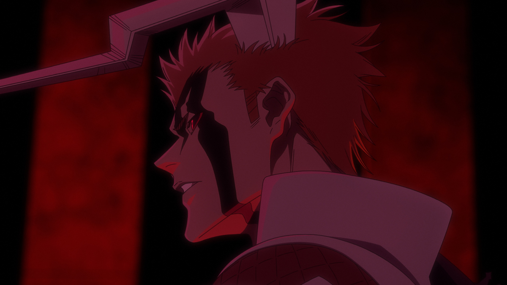
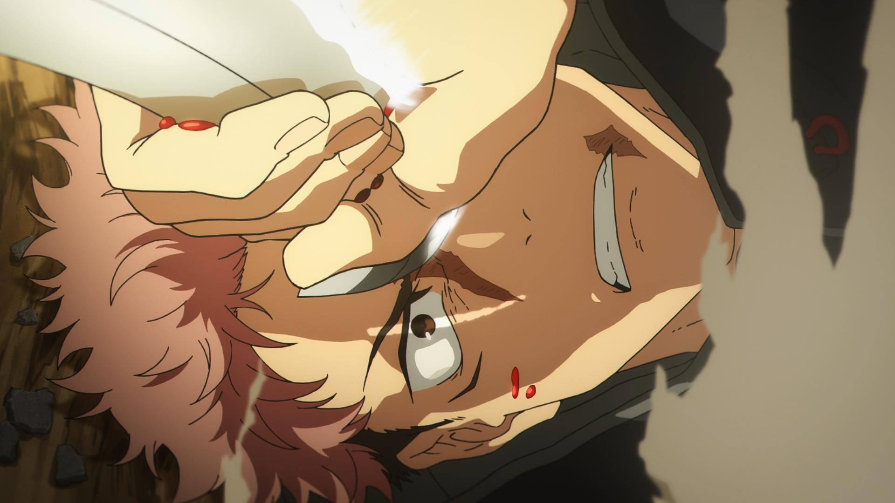
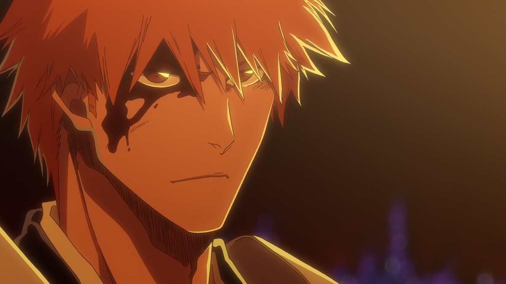
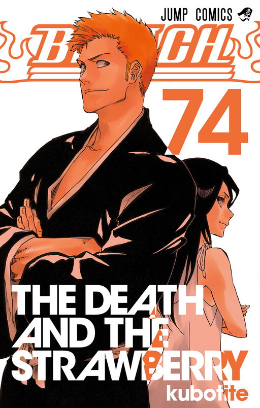

Sinopse: Ichigo e Orihime enfrentam Yhwach em uma batalha cada vez mais intensa, enquanto
Ichigo desperta uma nova transformação e ganha uma nova oportunidade de enfrentar
seu inimigo de igual
para
igual. Ao mesmo tempo, o confronto entre Uryu e Jugram continua, colocando antigos laços e convicções à
prova.
Gêneros: Ação, Aventura, Fantasia Sombria, Sobrenatural, Shounen.
| Assistir Episódio |
|---|

Sinopse: Após o Incidente de Shibuya, o “Culling Game”, um jogo brutal organizado por
Noritoshi Kamo, no qual certos indivíduos recebem poderes de Jujutsu, começa repentinamente
a acontecer
em
dez colônias espalhadas por todo o país. Os pensamentos das pessoas se entrelaçam, e o mundo caminha
novamente em direção a uma nova era de ouro da feitiçaria.
Gêneros: Ação, Aventura, Fantasia Sombria, Sobrenatural, Shounen.
| Ver Anime |
|---|

Sinopse: A trama segue o ceifador de almas substituto Ichigo Kurosaki, encarregado de
exorcizar Hollows, espíritos malignos que atacam as pessoas. Nesta história, Ichigo e seus amigos,
juntamente
com a Sociedade das Almas, devem lutar contra um exército de Quincys, humanos que podem
matar
Hollows, conhecidos como Wandenreich, liderados por seu líder Yhwach.
Gêneros: Ação, Aventura, Fantasia Sombria, Sobrenatural, Shounen.
| Ver Anime |
|---|

Sinopse: Kurosaki Ichigo é um estudante de 15 anos que tem uma estranha capacidade de ver,
tocar e falar com espíritos de pessoas mortas. Logo que o Shinigami (Deus da Morte) Kuchiki Rukia toma
conhecimento dos poderes dele ela decide investigá-lo, e acaba em uma luta com um Hollow que foi atraído
pelo forte poder espiritual de Ichigo, antes de ser derrotada pela criatura, Rukia passa seus
poderes a
Ichigo, o qual se torna um Shinigami, e após derrotar o Hollow ingressa em uma jornada para proteger os
humanos e os espíritos da ameaça dos Hollows.
| Ver Mangá |
|---|